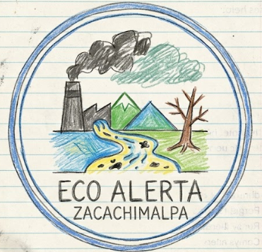
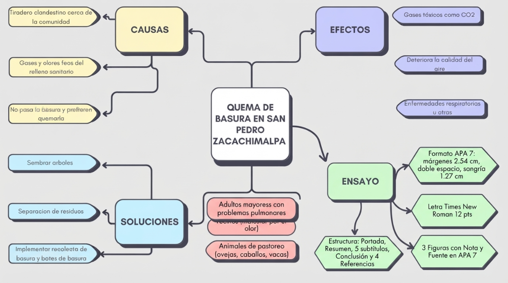
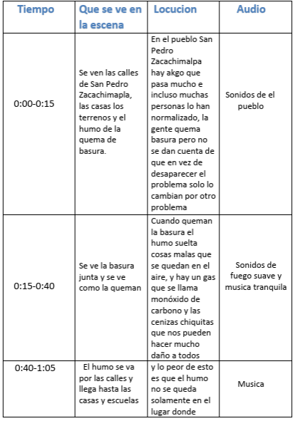
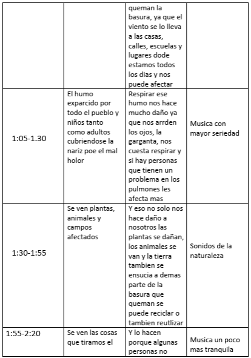
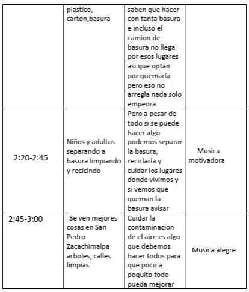

ECO ALERTA ZACACHIMALPA
"Por un Zacachimalpa limpio"
¿Quiénes somos?
Somos un grupo de estudiantes comprometidos con la concientización e investigación sobre los problemas ambientales que afectan a la comunidad de San Pedro Zacachimalpa, buscando informar y promover un entorno más sano para todos.


- Ávila Camacho. (s. f.). [Actualización de estado]. Facebook. https://www.facebook.com/LaJornadadeOrientePuebla/posts/-vecinos-de-san-pedro-zacachimalpa-denunciaron-un-tiradero-de-cascajo-y-basura-a/1519183120238075/
- Luna, R. A. (2024). San Pedro Zacachimalpa se suma al cuidado del medio ambiente [Video]. Facebook. https://www.facebook.com/RayAtanacioLuna/videos/san-pedro-zacachimalpa-se-suma-al-cuidado-del-medio-ambiente/1440927990270723/
- Secretaría de Medio Ambiente del Estado de Puebla. (2025, 14 de noviembre). Riesgos de la quema de residuos y pastizales en zonas periurbanas de la capital. Gobierno del Estado de Puebla. https://smadsot.puebla.gob.mx/comunicados/quema-residuos-aire
«Le preguntamos al profesor de Gestión de la Calidad "Leopoldito" si le incomodaba o molestaba la quema de basura en la zona, a lo que respondió que sí le afecta bastante. Mencionó que con frecuencia queman desechos o aveces solo pastizales cerca de las instalaciones del bachillerato y el humo entra directamente a los salones de clase. Esto resulta muy incómodo durante la clase, ya que la concentración del olor ha llegado a provocarle dolores de cabeza y mareos tanto a él como a los alumnos, o incluso incomidad por el olor.»
qr del ensayo
ESCALETA


